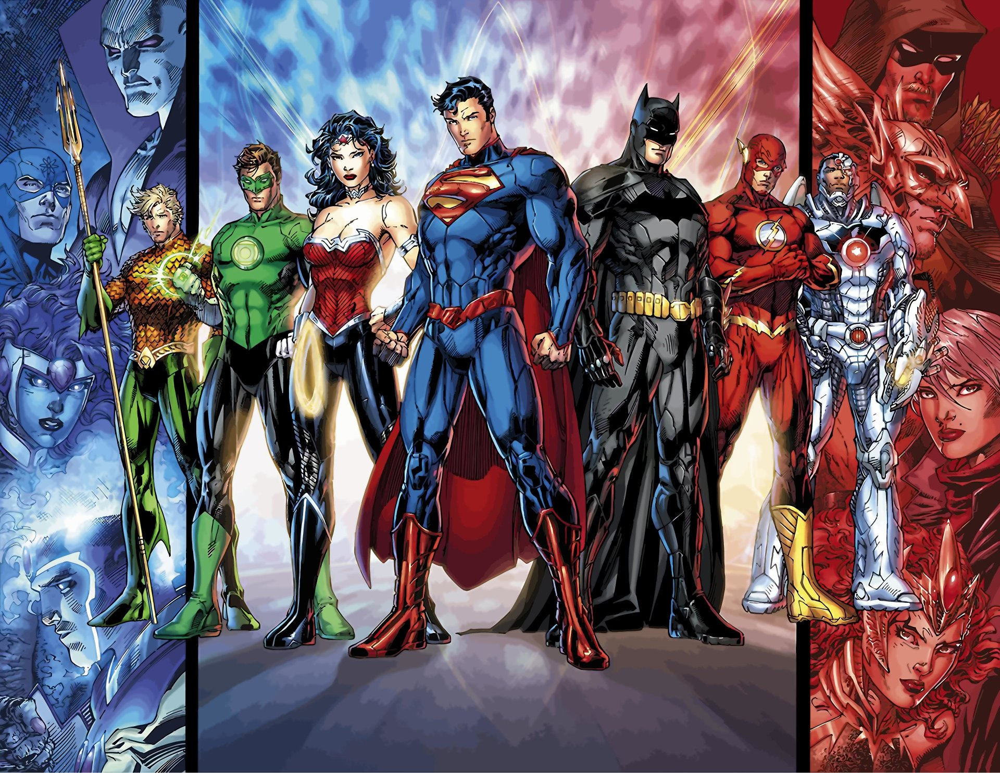
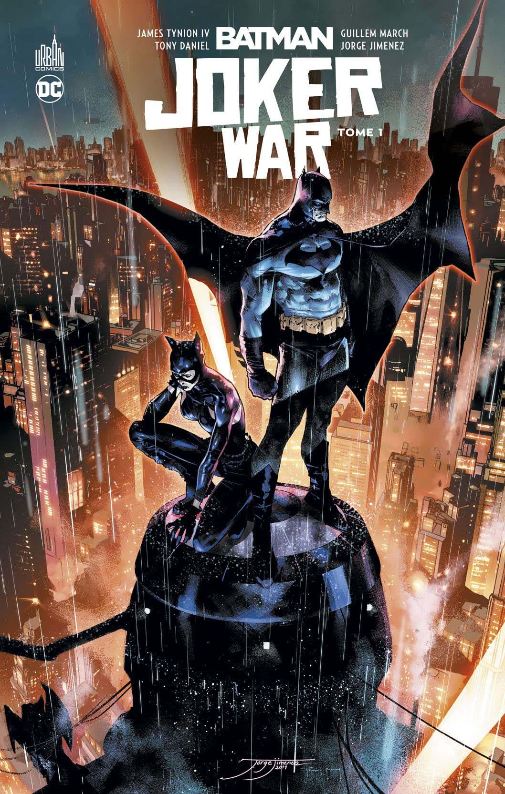
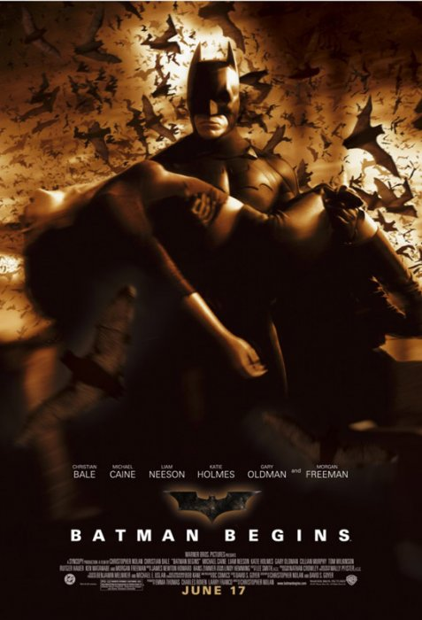

HISTOIRE
New York officiellement City of New York, autrement connue sous les noms et abréviations de New York City ou NYC, est la plus grande des États-Unis et l'une des plus importantes du continent américain. Elle se situe dans le Nord-Est des États-Unis, sur la côte atlantique, à l'extrémité sud-est de l'État de New York. La ville de New York se compose de cinq arrondissements appelés boroughs : Manhattan, Brooklyn Queens, le Bronx et Staten Island. Ses habitants s'appellent les New-Yorkais. En 1664, les Anglais conquirent la Nouvelle-Amsterdam qui fut rebaptisée « New York » en l'honneur de Jacques, duc d'York et frère du roi Charles II. L'anglicanisme devint la religion officielle de la colonie en 1698. La ville se développa rapidement : en 1700, elle comptait près de 5 000 habitants. Les premières institutions culturelles furent fondées comme le King's College en 1754. Le commerce se diversifia et se développa notamment grâce à l'aménagement du Great Dock sur l'East River en 167
Géographie
New York officiellement City of New York, autrement connue sous les noms et abréviations de New York City ou NYC, est la plus grande ville des États-Unis et l'une des plus importantes du continent américain. Elle se situe dans le Nord-Est des États-Unis, sur la côte atlantique, à l'extrémité sud-est de l'État de New York. La ville de New York se compose de cinq arrondissements appelés boroughs : Manhattan, Brooklyn, Queens, le Bronx et Staten Island. Ses habitants s'appellent les New-Yorkais. En 1664, les Anglais conquirent la Nouvelle-Amsterdam qui fut rebaptisée « New York » en l'honneur de Jacques, duc d'York et frère du roi Charles II. L'anglicanisme devint la religion officielle de la colonie en 1698. La ville se développa rapidement : en 1700, elle comptait près de 5 000 habitants. Les premières institutions culturelles furent fondées comme le King's College en 1754. Le commerce se diversifia et se développa notamment grâce à l'aménagement du Great Dock sur l'East River en 167
- 
Démographie
New York officiellement City of New York, autrement connue sous les noms et abréviations de New York City ou NYC, est la plus grande ville des États-Unis et l'une des plus importantes du continent américain. Elle se situe dans le Nord-Est des États-Unis, sur la côte atlantique, à l'extrémité sud-est de l'État de New York. La ville de New York se compose de cinq arrondissements appelés boroughs : Manhattan, Brooklyn, Queens, le Bronx et Staten Island. Ses habitants s'appellent les New-Yorkais. En 1664, les Anglais conquirent la Nouvelle-Amsterdam qui fut rebaptisée « New York » en l'honneur de Jacques, duc d'York et frère du roi Charles II. L'anglicanisme devint la religion officielle de la colonie en 1698. La ville se développa rapidement : en 1700, elle comptait près de 5 000 habitants. Les premières institutions culturelles furent fondées comme le King's College en 1754. Le commerce se diversifia et se développa notamment grâce à l'aménagement du Great Dock sur l'East River en 167
- 